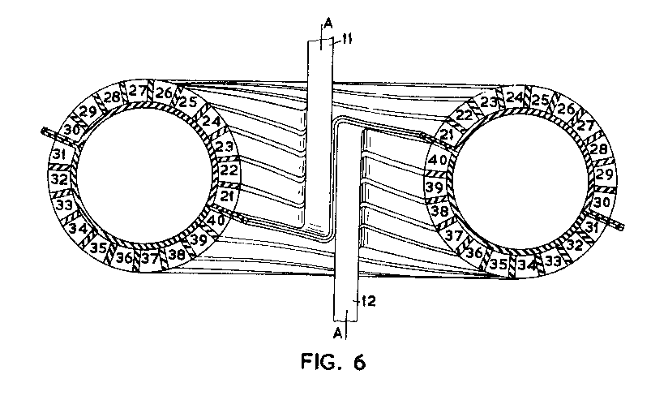

1958b
The following is a Patent granted on a U.K. Patent Application filed on February 21, 1958 by The English Electric Company Limited, Harold Aspden being the sole inventor. It was published on March 28, 1962.
U.K. PATENT NO. 892,333
'HIGH TEMPERATURE ELECTRIC DISCHARGE APPARATUS'
Commentary: This patent application was filed by the author's employer THE ENGLISH ELECTRIC COMPANY LIMITED. That was in in 1958 in the early days of the research efforts directed at 'hot fusion' power generation.
The patent specification opens with the usual preamble introducing the Applicant:
We, THE ENGLISH ELECTRIC COMPANY LIMITED, of Queens House, 28 Kingsway, London, W.C.2., a British Company, do hereby declare this invention to be described in the following statement:-
This invention relates to thermo-nuclear process control apparatus. It is the object of the invention to provide a new and improved apparatus of the "ZETA" (Zero, Energy Thermal Apparatus) type, in which a very high temperature is produced by a pinched electrical discharge in a gaseous medium.
The invention provides a thermo-nuclear process control apparatus comprising a discharge chamber and transformer acting means for inducing an EMF to produce an electrical discharge along a closed path within said chamber, the discharge constituting in effect a secondary winding, and said transformer acting means including a primary winding which has a configuration rendering it electrically equivalent to a hollow
conducting tube housing said chamber and the discharge path.
A thermonuclear process control apparatus of the kind to which this invention relates has been described on pages 160-164 of the January 31st, 1958, issue of "The Engineer".
In this apparatus an electrical discharge is induced in deuterium gas at low pressure by transformer action. The discharge constitutes, in effect, a secondary winding of a transformer and has a high self-inductance. By a pulsed energization of the primary winding a high current discharge having a large inherent inductive energy is set up and as electromagnetic effects promote a concentration of the discharge (by the so-called pinch effect} this inductive energy is concentrated into a progressively smaller region surrounding the discharge with the result that, although the current decays rapidly, the energy when dissipated as heat is dissipated over a very concentrated region. The effect of this is the production of very high local temperature in the deuterium gas. Such high temperatures are necessary to promote fusion reactions which liberate atomic energy.
A problem arises from the instability of the discharge and it is known that one way of reducing such instability consists in the provision of a magnetic field axially directed along the path of the discharge. A further problem arises from the natural expansion tendency of a current along a circular path, a feature which, in conjunction with the high energy demands of the discharge, renders it desirable to use a pulsed discharge which is regenerated intermittently.
An improved stability of the discharge is desirable (a) because higher temperature may thereby be induced at lower discharge currents and (b) because such stability is conducive to a more compact design for a given
power rating.
The invention provided for the winding enclosing the toroidal discharge chamber to be segmented in a series wound arrangement by which current supplied was forced to conform with a uniform distribution and thereby assist in keeping the discharge central within the fusion chamber.
Claim 5, which is an independent claim, reads:
Apparatus comprising a discharge chamber and transformer acting means for inducing an EMF to produce an electrical discharge along a closed path within said chamber, the discharge constituting in effect the secondary circuit of the transformer acting means, and the primary circuit of the transformer acting means comprising a two-terminal winding having a plurality of conductor turns each substantially coextensive with said discharge path and together distributed to have a configuration rendering the winding electrically equivalent to a hollow conducting tube housing said chamber and the discharge path and operative when current is passed between the two terminals of the winding to determine the current distribution in the winding independently of induced electromagnetic reaction effects of the discharge, said turns being wound around the discharge path to progress angularly about an axis defined by this path and establish, owing to this progression a magnetic field in the direction of the discharge when
the discharge is induced by the energization of the two terminal winding.
Figure 6 of the patent (presented below) shows a cross-sectional elevation view of an apparatus embodying the invention but suitable for operation at a lower voltage than a similar apparatus illustrated in Fig. 1 of the Patent.
